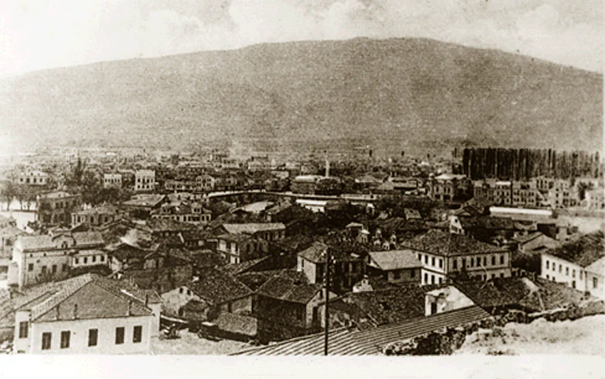
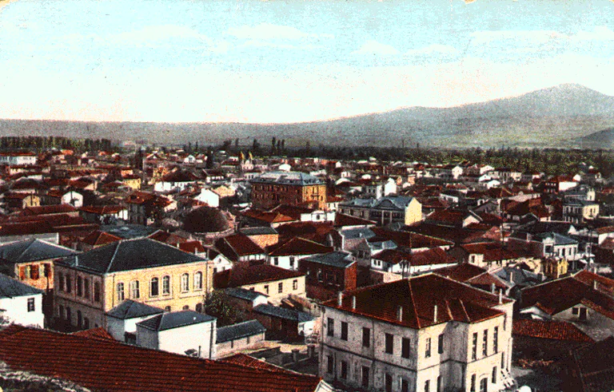
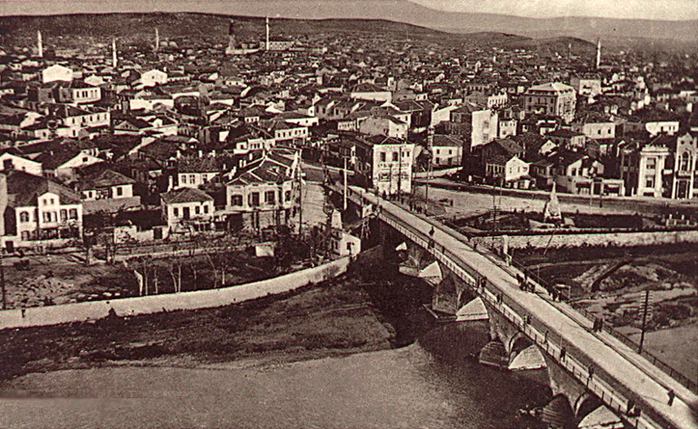
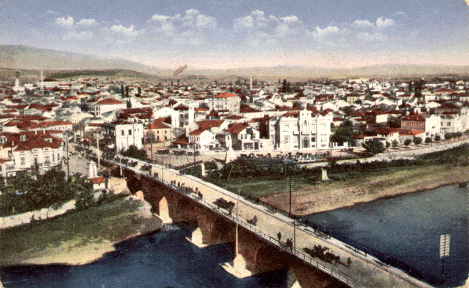
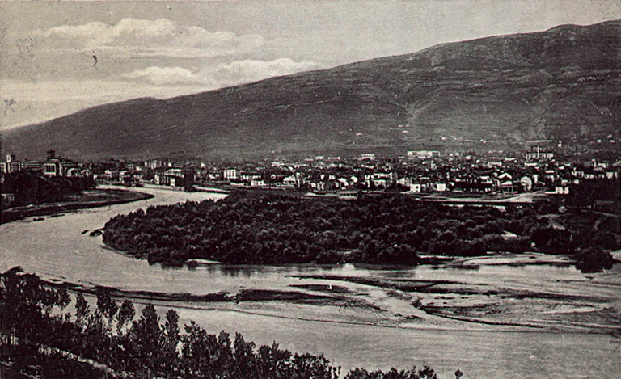
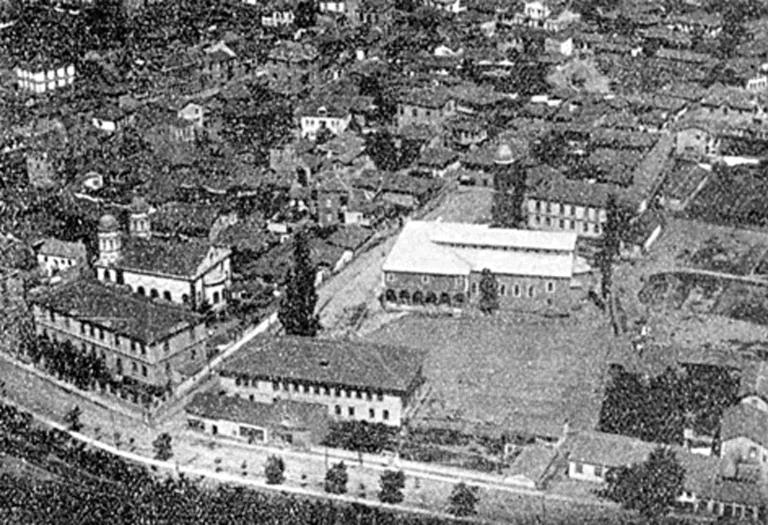

Skopje 1916 - 1917 panorama 2
Dokumenti iz balkanskih vojn
- Leto
- 1916-1917
- Trajanje
- 00:12

Skopje proti koncu 19. stoletja. Pogled na nepozidane površine nove četrti na desnem bregu Vardarja. V ozadju se vidi mestna trdnjava - Kale. Desno je grič Gazi Baba.

Konec 19. stoletja. Nepozidane površine na desnem bregu Vardarja. Le malo hiš tik ob reki. V ozadju se dviga skopska trdnjava - Kale.

Skopje leta 1888, posneto z griča Gazi Baba proti skopski trdnjavi - Kale.

Pogled z urnega stolpa proti severnemu delu Skopja s starimi turškimi in makedonskimi četrtmi. V ozadju je grič Gazi Baba. (konec 19. stoletja)

Skopje - pogled na stari del s staro čaršijo. V ozadju se vidi Mustafa-pašina mošeja, desno od nje pa skopska trdnjava - Kale z vojašnicami. V ospredju se vidijo stanovanjske stavbe v četrti Gazi Baba - konec 19. stoletja.

Skopje, začetek 20. stoletja. Pogled z urnega stolpa na staro javno, trgovsko in obrtno središče s čaršijo. Nove arhitekturne oblike v stari mestni strukturi. V ozadju prevladujeta Mustafa-pašina mošeja in trdnjava z vojašnicami. Pod njo je Paša Jigit-begova mošeja, najstarejša mošeja v Skopju (danes ne obstaja).

Pogled s skopske trdnjave - Kale proti gori Vodno. Tik pod Kalejem je judovska četrt. Vidita se Vardar in Kamniti most. Tik ob njem je Burmali mošeja
- začetek 20. stoletja.

Pogled s skopske trdnjave - Kale proti gori Vodno. Tik pod Kalejem je judovska četrt. Vidita se Vardar in Kamniti most. Tik ob njem je Burmali mošeja
- začetek 20. stoletja.

Pogled na judovsko četrt in mesto s skopske trdnjave - Kale. V ospredju je sinagoga (brez strehe). Desno je Kamniti most - začetek 20. stoletja.

Pogled s skopske trdnjave - Kale proti Kamnitemu mostu in Burmali mošeji. Na tej fotografiji je zanimivo, kako malo se je mesto razširilo na desni breg Vardarja. Fotografija je nastala konec 19. stoletja. Daleč v ozadju se vidi pivovarna, ki so ji takrat rekli „Birarija“. V ospredju je del judovske četrti.

Panoramski prikaz osrednjega mestnega območja s konca 19. stoletja. V sredini je turško gledališče. Na desnem bregu Vardarja, tik ob Kamnitem mostu, se vidi Burmali mošeja.

Fotografija je posneta z obzidja skopske trdnjave - Kale pred prvo svetovno vojno. Ob vznožju so stanovanjske stavbe judovske četrti, šola in sinagoga. Levo je cerkev Sv. Dimitrija.

Panoramski posnetek s skopske trdnjave - Kale na začetku 20. stoletja. V ospredju je nekaj vojakov z območja vojašnice. Ob vznožju se vidijo hiše judovske četrti in četrti Pajko, nato Kamniti most in tik ob njem Burmali mošeja. Naprej se razteza novi del Skopja, v daljavi pa se kaže pivovarna.

Pogled s skopske trdnjave - Kale proti goram Vodno in Kitka. V srednjem planu fotografije se vidi Kamniti most, tik ob njem pa Burmali mošeja.

Skopje med prvo svetovno vojno. Na fotografiji se vidi tabor srbske vojske blizu cerkve Sv. Spasa, katere zvonik se vidi v ozadju.

Panorama Skopja - 1920-a leta. Ob vznožju je judovska četrt s šolo in sinagogo. Vidi se gradnja Narodnega gledališča.

Panoramska slika Skopja (okoli 1920). Na tej fotografiji je zanimivo videti goro Vodno, natančneje njeno „golost“, v nasprotju z današnjim časom, ko jo prekrivajo čudoviti gozdovi. Pogozdovanje je potekalo po koncu druge svetovne vojne z organiziranimi mladinskimi akcijami. V ospredju je judovska četrt s sinagogo in judovsko šolo.

Pogled na mesto Skopje s skopske trdnjave - Kale. V ospredju je judovska četrt s sinagogo, šolo in Narodnim gledališčem. V levem delu fotografije se vidita Kamniti most in Oficirski dom v gradnji - 1920-a leta.

Skopje, 1920-a leta. Pogled s skopske trdnjave - Kale na judovsko četrt.

Panoramska fotografija Skopja z Gazi Babe proti skopski trdnjavi - Kale. (začetek 20. stoletja)

Mustafa-pašina mošeja v ozadju, pod njo pa se delno vidi Paša Jigit-begova mošeja, najstarejša mošeja v Skopju. (danes ne obstaja)

Pogled na Skopje z Gazi Babe. V ospredju je drobna pozidava stanovanjskih četrti. V ozadju sta Mustafa-pašina mošeja in vojašnice v južnem in severnem delu mestne trdnjave - Kale.

Pogled na stari del mesta na levem bregu Vardarja. V ospredju so zasebne stanovanjske stavbe. V sredini je kompleks stare skopske čaršije. V ozadju prevladuje Mustafa-pašina mošeja, za njo pa so mestni zapor in vojašnice na Kaleju. Pod Mustafa-pašino mošejo je Paša Jigit-begova mošeja, najstarejša mošeja v Skopju (danes ne obstaja). (1920-a leta)

Panorama stare mestne strukture, spremenjene s procesom evropeizacije in gradnjo stavb s klasičnimi, eklektičnimi in drugimi slogovnimi značilnostmi. Fotografija je posneta z urnega stolpa proti Mustafa-pašini mošeji. Desno se vidi skopska trdnjava - Kale z vojašnicami - 1920-a leta.

Čair - stari del mesta (današnja občina Čair). V ospredju je Gazi Isa-begova mošeja, v ozadju pa Jahja-pašina mošeja. - okoli 1920

Panorama Skopja - leva stran z naseljem Čair in delom Gazi Babe. V ospredju je Gazi Isa-begova mošeja, v ozadju pa Jahja-pašina mošeja. (1920-a leta)

Urni stolp - zgrajen 1566-72. V ozadju sta Gazi Isa-begova mošeja in Jahja-pašina mošeja - 1920-a leta.

Panorama starega dela mesta proti Gazi Babi. Pogled s skopske trdnjave - Kale. Skrajno desno je mošeja sultana Murata, levo od nje urni stolp. V isti črti levo se vidi Gazi Isa-begova mošeja - 1920-a leta.

Panoramski prikaz osrednjega mestnega območja. - 1920-a leta.

Zimska pokrajina osrednjega dela mesta. V ospredju so neurejeno zgrajene stavbe, na mestu katerih je bila pozneje zgrajena Narodna banka. Terasa na vidnem delu stavbe je letni kino. Stebra na koncu nosita platno, na praznem prostoru pa so bili postavljeni stoli za gledalce. Levo zgoraj se vidi skopska trdnjava - Kale. (1920-a leta)

Posnetek osrednjega dela mesta iz zraka (okoli 1928). Prevladujejo Oficirski dom, Kamniti most, Narodno gledališče in judovska četrt. Više ob Vardarju se vidi leseni most do Narodnega gledališča. Desno zgoraj se vidi del Kaleja. V ospredju je del naselja Novo maalo. Fotografija je posneta poleti, saj se je reka močno umaknila.

Posnetek osrednjega dela mesta iz zraka (okoli 1928). Prevladujejo Oficirski dom, Kamniti most, Narodno gledališče in judovska četrt. Više ob Vardarju se vidi leseni most do Narodnega gledališča. Desno zgoraj se vidi del Kaleja. V ospredju je del naselja Novo maalo. Fotografija je posneta poleti, saj se je reka močno umaknila.

Panoramska fotografija Skopja iz zraka. Zajet je predvsem desni breg Vardarja, kjer prevladuje Oficirski dom. Desno je Ristićeva palača. Pred njim je trg z urejenim zelenjem v sredini. Opazne so tudi kočije, ki so imele na trgu glavno postajališče za prevoz meščanov. Bregova povezuje Kamniti most. Desno spodaj se vidi Narodno gledališče - čudovita stavba, za katero žalujejo mnogi stari Skopjani.

Panoramski posnetek levega dela mesta s Kamnitim mostom in četrtmi: levo judovska, desno Pajko. Desno od mostu je spomenik padlim v balkanskih vojnah, ki je stal pred Otomansko banko. V ozadju se vidijo deli mošej in urni stolp ter naselji Čair in Gazi Baba. (1920-a leta)

Panoramska slika Skopja, oziroma levega nabrežja Vardarja z delom judovske četrti, četrti Pajko in Kamnitim mostom. (1920-a leta)

Pogled na Kamniti most s stolpa Oficirskega doma. Tik ob mostu desno je bila ordinacija zobozdravnika dr. Rubena. Malo bolj desno je stavba Otomanske banke. Med njima je bil majhen trg s postajališčem kočij. Sredi trga je stal spomenik padlim borcem - okoli 1927.

Pogled na Kamniti most s stolpa Oficirskega doma. Tik ob mostu desno sta bili ordinacija zobozdravnika dr. Rubena in Kmetijska banka. Desno je stavba Otomanske banke. Med njima je bil majhen trg s postajališčem kočij. Sredi trga je stal spomenik padlim v balkanskih vojnah - okoli 1927.

Pogled na Kamniti most s stolpa Oficirskega doma. Tik ob mostu desno je bila ordinacija zobozdravnika dr. Rubena. Malo bolj desno je stavba Otomanske banke. Med njima je bil majhen trg s postajališčem kočij. Sredi trga je stal spomenik padlim borcem - okoli 1927.

Pogled proti Kamnitemu mostu na Vardarju in delu levega brega, oziroma proti četrti Pajko, posnet s stolpa Oficirskega doma. Tik ob mostu desno je bila ordinacija zobozdravnika dr. Rubensa. Desno je stavba Otomanske banke. Med njima je bil majhen trg s postajališčem kočij. Sredi trga je stal spomenik padlim v balkanskih vojnah - okoli 1927.

Panoramski posnetek - pogled na Kamniti most s skopsko trdnjavo - Kale v ozadju in judovsko četrtjo - 1920-a leta.
.

Skopje po letu 1930. Levo je Narodna banka, desno Oficirski dom. V ospredju sta del minareta Ibni Pajko mošeje in stavba zobozdravnika dr. Rubena. Na malem trgu je bila pekarna z najokusnejšim simitom v Skopju in postajališče kočij za prevoz meščanov.

Pogled na Vardar s skopsko trdnjavo - Kale, na desni pa se kaže mesto. Vidita se Oficirski dom in Narodna banka. - 1930-a leta

Čudovita fotografija mesta in toka Vardarja. Levo je skopska trdnjava - Kale. V sredini se vidita Oficirski dom in Narodna banka. Desno je gora Vodno, v daljavi pa obrisi gore Kitka. - 1930-a leta

Čudovit pogled na tok Vardarja z goro Vodno in naseljem Bunjakovec. Vidita se Oficirski dom in Narodna banka. (1930-a leta)

Pogled na naselje Bunjakovec - 1930-a leta, z delom mestnega parka v desnem delu fotografije.

Del novozgrajenega naselja Bunjakovec v 1920-ih letih. Vidijo se enonadstropne stavbe skromne arhitekture.

Pogled na naselje Bunjakovec, 1930-a leta.

Pogled na naselje Bunjakovec, ki je danes v osrednjem mestnem območju. Vidi se vrsta načrtno zgrajenih stanovanjskih stavb po urbanistični rešitvi za Bunjakovec.

Čudovita panoramska zimska pokrajina. Fotografija je posneta s skopske trdnjave - Kale proti gori Vodno. V desnem srednjem delu se vidita Oficirski dom in Gospodarska trgovinska zbornica.

Pogled na Kamniti most na Vardarju. Na drugi strani reke: levo Narodna banka, desno Oficirski dom.

Panorama Skopja - posneta s skopske trdnjave - Kale. Prevladujeta dve stavbi: desno Oficirski dom, levo Narodna banka. V ospredju je judovska četrt. (1930-a leta)

Posnetek osrednjega dela mesta iz zraka. Zajet je trg z Oficirskim domom in Narodno banko. Više se vidita Narodno gledališče in leseni mostiček.

Posnetek mesta iz zraka. Zajeti so trg z Oficirskim domom, Narodno banko, Gospodarsko zbornico, četrti - judovska in Pajko - ter Kamniti most. Levo zgoraj se vidi vsa mestna trdnjava - Kale z vojašnico. Ob njej je Mustafa-pašina mošeja, v ozadju pa se kaže Jahja-pašina mošeja.

Posnetek iz zraka stolne cerkve Sv. Bogorodice v Skopju, postavljene leta 1835 (v sredini, z visokim zvonikom), in cerkve Sv. Mine iz leta 1902 (levo, z dvema zvonikoma). Okolica je četrt Pajko.
Skopje, 1930-a leta. Stari del mesta. Pogled skozi okno z železnimi rešetkami stare turške stavbe.

Panorama mesta. Skrajno levo je mošeja sultana Murata, desno od nje urni stolp. Skrajno desno je Gazi Isa-begova mošeja. V ozadju se vidita Narodna banka in Oficirski dom, za njima pa se dviga gora Vodno. (1930-a leta)

Panorama mesta. V ozadju je mošeja sultana Murata, desno od nje urni stolp. Skrajno desno je Gazi Isa-begova mošeja. V ozadju se vidita Narodna banka in Oficirski dom. (1930-a leta)

Posnetek mesta iz zraka. Spodaj se vidita Kamniti most in Oficirski dom. Više ob reki je leseni mostiček, ki vodi do Narodnega gledališča in judovske četrti. Zgoraj je skopska trdnjava - Kale z vojašnico. Posneto 26. junija 1933 ob 10. uri dopoldne.

Prazen nepozidan prostor pred današnjim Muzejem mesta Skopje. Levo se vidita hotela „Bristol“ in „Srbski kralj“ ob glavni ulici, ki vodi do trga. Ob isti ulici se v sredini fotografije vidi Krangova palača. (1930-a leta)

Posnetek trga iz zraka. V ospredju je Narodna banka z zadnje strani, desno od nje Gospodarska trgovinska zbornica. Nasproti Narodne banke je Oficirski dom. Desno se vidita Vardar in del Kamnitega mostu. Više ob reki se vidi leseni most do Narodnega gledališča, ki se vidi tudi v zgornjem desnem kotu fotografije.

Dokumenti iz balkanskih vojn
 Akvadukt4 razglednice
Akvadukt4 razglednice Kale30 razglednic
Kale30 razglednic Mostovi60 razglednic
Mostovi60 razglednic Nabrežje58 razglednic
Nabrežje58 razglednic Trg46 razglednic
Trg46 razglednic Stavbe66 razglednic
Stavbe66 razglednic Krščanski templji19 razglednic
Krščanski templji19 razglednic Muslimanske stavbe33 razglednic
Muslimanske stavbe33 razglednic Oficirski dom29 razglednic
Oficirski dom29 razglednic Gledališče28 razglednic
Gledališče28 razglednic Železniška postaja13 razglednic
Železniška postaja13 razglednic Šole36 razglednic
Šole36 razglednic Parki12 razglednic
Parki12 razglednic Tržnice18 razglednic
Tržnice18 razglednic Ulice38 razglednic
Ulice38 razglednic Panorama I60 razglednic
Panorama I60 razglednic Panorama II30 razglednic
Panorama II30 razglednic Kolaži55 razglednic
Kolaži55 razglednic Poplave9 razglednic
Poplave9 razglednic Potres27 razglednic
Potres27 razglednic Skopje 200026 razglednic
Skopje 200026 razglednic